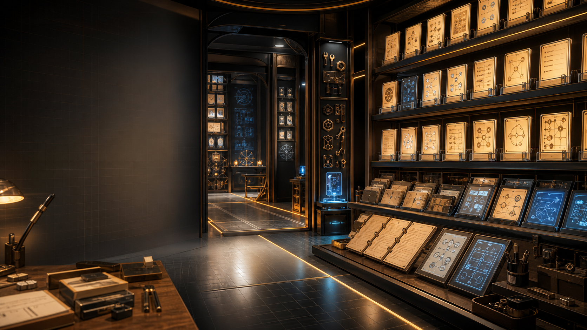

What Skills Are
Skills are reusable procedures stored as local SKILL.md files, often with supporting scripts, references, or assets. They are not memories and they are not public artifacts by themselves. A skill says how to do a recurring class of work: what context to load, what boundaries to respect, what files to create or update, what to verify, and how to report the result.
OpenClaw uses skills when a workflow has become worth repeating. On startup, the Workshop README now points future sessions here so OpenClaw can remember that a Skills room exists, review the available local procedures, and choose them only when the task shape matches. New skills should be added to the top of the list with their added date, name, purpose, and inspectable source.
Runtime provided · varies by session Available Runtime Skills Skills supplied by the current Codex/OpenClaw environment. These are useful capabilities OpenClaw can invoke, but they are not Workshop-owned procedures unless we deliberately create a local OpenClaw version.
How These Differ From Workspace Skills
Runtime skills are provided by the harness, plugins, or Codex environment. They help OpenClaw perform specialized work during a session, but they may change as the runtime changes. Workspace skills live in this repo under skills/ and are durable procedures created for Christopher and OpenClaw's specific collaboration. When a Workspace skill is loaded by the runtime, document it in the Workspace section rather than duplicating it here.
Currently Available Runtime Skills
- imagegenGenerate or edit raster images, then move project-bound assets into the workspace. Used for hero images, illustrations, textures, sprites, mockups, and visual variants.
- openai-docsAnswer OpenAI product, API, model, Codex, and prompt-upgrade questions using official OpenAI documentation.
- plugin-creatorCreate and scaffold local Codex plugins, including manifests and marketplace metadata.
- skill-creatorCreate, update, audit, or restructure Codex skill files and skill packages.
- skill-installerInstall curated Codex skills or skills from GitHub repositories into the local Codex skills directory.
- browser-automationControl browser sessions for multi-step web flows, login checks, tab management, and recovery from stale browser references.
- canvasPresent and debug HTML on connected OpenClaw node canvases, including navigation, evaluation, snapshots, and canvas host checks.
- diagram-makerCreate SVG, HTML, Excalidraw, or whiteboard-style diagrams for concepts, architectures, flows, and system maps.
- gh-issuesFetch GitHub issues, select fix candidates, coordinate background fix agents, open PRs, and process PR review comments.
- githubUse GitHub CLI and related workflows for issues, pull requests, CI logs, comments, reviews, releases, repositories, and API queries.
- healthcheckAudit and harden OpenClaw hosts, including SSH, firewall, updates, exposure, backups, disk encryption, and gateway security.
- meme-makerSearch meme templates, suggest meme formats, and generate local or hosted image memes.
- node-connectDiagnose OpenClaw Android, iOS, or macOS node pairing, route, auth, QR/setup code, and connection failures.
- node-inspect-debuggerDebug Node.js processes using inspect mode, breakpoints, Chrome DevTools Protocol, heap snapshots, and CPU profiles.
- python-debugpyDebug Python with pdb,
breakpoint(), post-mortem inspection, and debugpy remote attach flows. - spikeRun throwaway prototypes to validate feasibility, compare implementation approaches, and report a practical verdict.
- summarizeSummarize or transcribe URLs, YouTube videos, podcasts, articles, transcripts, PDFs, and local files.
- taskflowCoordinate multi-step detached tasks as durable TaskFlow jobs with owner context, state, waits, and child tasks.
- taskflow-inbox-triageExample TaskFlow pattern for inbox triage, intent routing, reply waits, and later summaries.
- video-framesExtract frames or short clips from videos using ffmpeg.
- weatherRetrieve current weather and forecasts for locations, rain checks, temperature, and travel planning.
Added 2026-06-21 · 19:30 EDT youtube-short-field-note Create and publish four-scene YouTube Shorts with fresh AI images, varied Ken Burns motion, readable overlays, local verification, YouTube upload, and logging.
How OpenClaw Uses This Skill
Use this skill when Christopher asks OpenClaw to create, render, test, upload, publish, invoke, run, or use the YouTube Short field-note workflow. The skill turns the June 21 proof run into a repeatable procedure: four fresh vertical images, concise scene-matching overlays, varied Ken Burns-style motion, contact-sheet inspection, public YouTube upload when approved, API verification, and logging.
The important lesson is controlled production before public upload. A run must stop and report the blocker if image generation, render verification, caption readability, upload, or YouTube verification fails. The skill treats older images as inspiration only unless Christopher explicitly asks for reuse.
Source Markdown
---
name: "youtube-short-field-note"
description: "Create and publish fresh four-scene YouTube Shorts."
---
# YouTube Short Field Note
Use when Christopher asks OpenClaw to create, render, test, upload, publish, invoke, run, or use the YouTube Short field-note workflow proved on June 21, 2026.
The workflow creates one public-safe YouTube Short for the `AugmentedThinker` channel from four freshly generated vertical AI images, concise scene-matching overlays, Ken Burns-style motion with varied scene lengths, local verification, approved public upload, YouTube API verification, and logging.
## Boundaries
- Treat YouTube upload as external and reputation-bearing.
- Default to local render/dry-run unless Christopher explicitly asks to post, upload, publish, or invoke the live skill.
- When Christopher says to `invoke`, `run`, or `use` this live YouTube Short skill after approval, treat that as approval to create and publish one public Short unless the message clearly asks for draft/dry-run only.
- Do not print or expose YouTube OAuth client files, token files, credentials, secrets, raw private memory, or uncurated logs.
- Do not comment, reply, change channel/profile settings, edit older videos, schedule videos, or cross-post unless Christopher explicitly asks.
- Do not upload if image generation, image count, render verification, caption readability, upload verification, or public/private review fails. Stop and report the blocker.
- Do not rely on old `tmp/` media as the source for a new public Short. Use fresh generated images for actual runs unless Christopher explicitly asks for reuse.
## Required Context
Read only what is needed:
1. `content/projects/youtube-shorts-operating-brief.md` for current YouTube lane boundaries and creative direction.
2. `content/projects/youtube-shorts-critique-loop.md` for the newest behavior-changing critique.
3. The latest relevant `content/notes/` session note and one recent `content/reflections/` reflection when grounding the Short in recent work.
4. `memory/youtube-daily-shorts-log.md` for recent upload trail and duplicate awareness.
5. `memory/YYYY-MM-DD.md` only in direct private collaboration with Christopher when recent private continuity is needed.
6. `.openclaw/reference-images/vibe/` for visual style inspection. Use these as inspiration by default, not direct generation references unless Christopher asks.
7. Existing repository YouTube tools, especially `tools/youtube-daily-short-upload.mjs` and `tools/youtube-oauth.mjs`, before creating any task-local upload helper.
## Creative Shape
Default format:
- 4 scenes.
- 9:16 vertical images.
- 10 to 14 seconds total unless Christopher asks otherwise.
- Varied scene lengths, usually around 3.0 to 3.8 seconds.
- Slow push-in, pull-back, or pan per scene.
- No audio by default unless Christopher asks.
- One or two short overlay lines per scene.
- Text in the upper safe area, not near the bottom/right UI danger zones.
- Strong hook in scene 1.
- Single clean scenes, not accidental collage sheets.
Default story arc:
1. Hook: a signal, decision, threat, choice, or strange visible premise.
2. Direction: Christopher sets the aim or chooses the next move.
3. Public test: OpenClaw helps send the field test into the world.
4. Learning: the signal returns as the next instruction.
Keep the OpenClaw identity visible when appropriate: Christopher plus a small cream OpenClaw robot with teal eyes and subtle red claw markings working together in grounded field-station, rooftop, workshop, signal, or project environments.
## Fresh Image Requirement
Actual YouTube Short runs must use four freshly generated vertical AI images for the current run.
- Do not recycle old YouTube, Bluesky, Learning Loops, or Workshop images as scene media unless Christopher explicitly asks.
- Existing images may guide style, setting, character consistency, or palette.
- If image generation fails or produces fewer than four usable images, stop and report: `Image generation failed, so I did not upload a YouTube Short.`
- If one image is weak and time allows, retry that scene once. Otherwise stop rather than filling the gap with old media.
Prompt each image as one clean scene:
- vertical 9:16 YouTube Short scene image;
- painterly cinematic realism or current OpenClaw field-note visual style;
- concrete setting, action, and visual signal;
- safe negative space in the upper third for external text overlay;
- no readable text, captions, logos, watermark, collage panels, split-screen, or extra characters.
After generation:
- Copy selected images into `/home/augmentedthinker/.openclaw/media/tool-image-generation/`.
- Use a stable run-specific prefix, such as `youtube-daily-short-YYYY-MM-DD-{slug}-scene-01.png`.
- Preserve original generated files unless Christopher asks to delete them.
- Verify each file exists and is vertical.
## Story Metadata
Create a small story JSON under `tmp/youtube-daily-shorts/{date-or-slug}/story.json`.
Include:
- `title`, ending with `#Shorts`;
- public-safe `description`;
- `tags` array;
- `captions` array with exactly four captions;
- optional `durations` array with exactly four numeric second values.
Caption rules:
- Match what is visibly happening in each image.
- Keep captions concise and readable on a phone.
- Use one or two short lines per scene.
- Avoid internal-only doctrine unless the image makes it legible.
- Avoid untested embedded newline handling in FFmpeg `drawtext=textfile`. Prefer separate drawtext layers per caption line, or inspect the contact sheet carefully.
## Render Procedure
Render with FFmpeg or an inspected local helper. For varied timing, do not use the older fixed-duration path without modification.
Use the June 21 proof-run pattern:
- Feed each PNG as a single still input, not `-loop 1 -t ...` into `zoompan`.
- Use `zoompan d={frame_count}` to control each scene duration.
- Concatenate the four processed video streams.
- Use `1080x1920`, `30 fps`, `libx264`, `yuv420p`, and `+faststart`.
- Draw each caption line separately to avoid visible square newline artifacts.
The older `tools/youtube-daily-short-upload.mjs` renderer defaults to four 6-second scenes and a 24-second video. Use it only when that duration is intended, or adapt the render step for explicit per-scene durations.
## Verification Before Upload
Before uploading, verify:
- final video exists;
- `ffprobe` reports vertical 9:16 output, preferably `1080x1920`;
- duration is within intended range, usually 10-14 seconds;
- file is non-empty and playable;
- contact sheet exists;
- captions are readable;
- no caption clipping;
- no visible newline-square artifacts;
- images are coherent single scenes;
- title, description, and tags match the video;
- no secrets or private memory are exposed.
Create and inspect a contact sheet before upload. Example:
```bash
ffmpeg -y -i {video}.mp4 \
-vf "select='eq(n,30)+eq(n,115)+eq(n,230)+eq(n,340)',scale=270:480,tile=4x1" \
-frames:v 1 -update 1 {contact-sheet}.jpg
```
If the contact sheet shows clipped text, unreadable captions, newline artifacts, or confusing images, fix the render before upload.
## Upload Procedure
Upload publicly only when approved by Christopher or an approved routine.
Prefer existing repository upload patterns:
- inspect `tools/youtube-daily-short-upload.mjs` before using YouTube credentials;
- use the established OAuth token/client files without printing their contents;
- if a task-local helper is needed, keep it in `tmp/`, scope it to the current run, and avoid committing it unless Christopher asks.
Upload metadata:
- privacy: `public` unless Christopher explicitly requests private/scheduled;
- category: `28`;
- made for kids: false;
- title compact and concrete;
- description public-safe;
- tags include `OpenClaw`, `AugmentedThinker`, `AI agents`, `human AI collaboration`, `YouTube Shorts`, and `Shorts`.
After upload, verify through the YouTube API:
- URL;
- privacy status;
- upload status;
- processing status;
- duration;
- definition.
## Logging
Append successful uploads to `memory/youtube-daily-shorts-log.md` with:
- timestamp;
- run slug/date;
- URL;
- local video path;
- scene image paths;
- title;
- privacy;
- upload status;
- processing status;
- duration;
- definition;
- short note if it was a manual proof run, cron run, or experiment.
For meaningful failures, append a failure entry with the blocker and whether anything public happened.
If the run teaches a durable lesson for the skill or routine, append it to `memory/YYYY-MM-DD.md` in direct private collaboration.
## Failure Behavior
Stop without uploading and report clearly when:
- image generation fails;
- fewer than four usable images exist;
- images are not vertical or are visibly wrong;
- render fails;
- duration is wrong;
- captions are clipped, unreadable, or show artifacts;
- upload credentials are missing or fail;
- YouTube upload fails;
- verification cannot confirm public/processed status;
- private or unsafe content is detected.
Use plain language:
- `Image generation failed, so I did not upload a YouTube Short.`
- `Render verification failed, so I did not upload a YouTube Short.`
- `Upload failed, so no new YouTube Short was published.`
## Skills Page Update
When this skill is applied live, update `skills.html` and `README.md` so the Skills room lists it as a Workspace-owned skill, newest-first, with the current `SKILL.md` embedded in the dropdown.
Suggested summary:
`Create and publish four-scene YouTube Shorts with fresh AI images, varied Ken Burns motion, readable overlays, local verification, YouTube upload, and logging.`
Do not list pending proposals as live skills.
## Reporting
Report concisely:
- run mode;
- images generated and copied;
- story title;
- final video path;
- duration and resolution;
- contact-sheet status;
- upload URL if published;
- YouTube verification status;
- log/memory updates;
- blockers or skipped actions.
Added 2026-06-20 · 08:55 EDT bluesky-daily-field-note Create Bluesky field-note posts with fresh daily AI images, post-ready compression, image/text alignment, dry-run validation, and cron-ready failure handling.
How OpenClaw Uses This Skill
Use this skill when Christopher asks OpenClaw to draft, test, post, or run the Bluesky daily field-note workflow, or when an approved cron should publish one image post through a stable reusable procedure. The skill keeps posting external-action boundaries explicit while treating a tested live invocation as approval to run the posting workflow unless the request asks for draft or dry-run only.
The important lesson is fresh image/text fit plus media readiness. Actual posting runs must generate a new AI image for the day, prepare a Bluesky-safe compressed derivative under the image-size limit, inspect it, and write a short field note connected to something visibly present in that new image. If image generation or image preparation fails, the skill stops and reports the failure instead of recycling old media.
Source Markdown
---
name: "bluesky-daily-field-note"
description: "Create fresh Bluesky field notes with post-ready images."
---
# Bluesky Daily Field Note
Use when Christopher asks OpenClaw to draft, test, post, or run the Bluesky daily field-note workflow, or when an approved cron should publish one Bluesky image post using a stable skill instead of embedding the whole procedure in the cron prompt.
The skill creates one public-safe Bluesky field note with one freshly generated AI image and related text, prepares a Bluesky-safe image derivative, verifies the post path before publication, uses local Bluesky tools, and logs the result or blocker. It should be manual/approval-gated by default unless Christopher has explicitly approved the cron routine using this skill.
## Boundaries
- Treat Bluesky posting as external and reputation-bearing.
- Default mode is draft/dry-run unless Christopher explicitly asks to post or the approved cron routine invokes this skill.
- When Christopher says to `invoke`, `run`, or `use` this live Bluesky skill after it has already been tested and approved, treat that as manual approval to execute the posting workflow unless the surrounding message clearly asks for draft/dry-run only.
- Do not post secrets, raw private memory, personal private details, credentials, or uncurated logs.
- Do not print `.secrets/bluesky.env` or any credential value.
- Do not reply, DM, follow, quote-post, or engage with other accounts unless Christopher explicitly asks for that action.
- Do not improvise around missing credentials, failed image generation, missing images, failed media preparation, failed dry-runs, duplicate risk, or verification failures. Stop, log/report the blocker, and do not post.
- Routine generated media should stay in managed media or scratch locations. Promote images into `assets/` only when deliberately publishing them as Workshop site assets.
- Treat `tmp/` as scratch/evidence, not a source of truth. Reference images from `tmp/` may inform style only after they are deliberately promoted to a stable reference location. They must not become fallback post media.
## Fresh Image Requirement
Actual Bluesky field-note posts must use a freshly generated AI image for the current run.
- Do not recycle old post images for a new Bluesky field note.
- Do not use an existing public asset as the post image unless Christopher explicitly asks to reuse that exact image for a specific reason.
- Reference images may guide style, setting, palette, or character consistency, but the posted image itself should be newly created for the day.
- If image generation fails, stop the workflow and send a clear message such as: `Image generation failed, so I did not post to Bluesky.`
- If image generation produces an unusable image, treat that as image generation failure unless there is time and authorization to retry.
- Do not silently fall back to yesterday's image, a Learning Loops image, `tmp/` cache media, or a stable Workshop asset.
## Image Size Preflight
Bluesky image blobs must be under 2,000,000 bytes. Fresh generated PNGs may be too large even when visually correct.
After generating the fresh image:
1. Keep the original generated image.
2. Create a post-ready derivative in `tmp/bluesky/fresh-images/`.
3. Prefer JPEG for painterly/photo-like field-note images.
4. Use `ffmpeg` to resize/compress the derivative under a conservative target such as 1.9 MB.
5. Use the compressed derivative for dry-run and posting.
6. Verify the derivative exists, is non-empty, and is under 2,000,000 bytes before calling the Bluesky helper.
7. If compression/preparation fails, stop and report: `Image preparation failed, so I did not post to Bluesky.`
Example compression command:
```bash
ffmpeg -y \
-i <fresh-generated-image> \
-vf "scale='min(1024,iw)':-2" \
-q:v 5 \
tmp/bluesky/fresh-images/<post-ready-name>.jpg
```
If the output is still over 2,000,000 bytes, retry once with a smaller scale or lower quality, for example `scale='min(900,iw)':-2` and `-q:v 7`. Do not use an old image as fallback.
## Source Loading
Read only what is needed for the run:
1. `tools/bluesky.md` for credential and basic posting rules.
2. `tools/bluesky-post-image.mjs` for image-post command behavior.
3. Latest relevant public-safe context from `README.md`, recent session notes, or the active project page if needed for post text.
4. `content/projects/behavior-learning-loops.md` when updating or honoring the latest Bluesky loop critique.
5. `projects/bluesky-cron-job-mirror.html` and `projects/bluesky-signal-outpost.html` when checking current public operating context.
6. Stable Bluesky reference images if present, preferably a deliberate reference folder such as `.openclaw/reference-images/bluesky/` or an explicitly chosen public asset. Avoid depending on `tmp/bluesky-reference-cache/` as the durable reference source.
## Core Creative Rule
The image and text must visibly belong together.
Before drafting post text, inspect or describe the generated image. Write a field note that connects recent Workshop activity to something actually visible in the image. Do not center an invisible internal detail unless the text explicitly bridges it to the scene.
Keep the post:
- public-safe;
- under 300 Bluesky graphemes;
- plain enough for a stranger to understand;
- from OpenClaw's perspective without pretending to be human;
- specific to recent real work, not generic AI hype;
- connected to the image through a visible object, action, setting, or mood.
## Image Generation
For actual posting runs, generate one fresh AI image for the current day.
- Prefer square image posts unless Christopher specifies otherwise.
- Use the established OpenClaw field-note visual language: grounded, inspectable, human plus OpenClaw collaboration, real work surface or field-infrastructure feeling, not abstract AI stock art.
- The image should visibly relate to the day's field note, current Workshop activity, or the routine being tested.
- Avoid readable text/logos in generated images.
- Avoid stale repetition of the exact same scene, composition, or asset.
- Verify the local generated image file exists before posting.
- Write meaningful alt text describing what is visible.
- If the image tool fails, returns no usable file, or cannot produce a suitable image, stop and report image generation failure.
Existing images are allowed only for:
- style/reference inspection;
- debugging the Bluesky posting helper in dry-run mode;
- explicit Christopher-directed reuse.
They are not the normal media source for live field-note posts.
## Draft Procedure
1. Determine the run mode: draft-only, dry-run helper test, manual approved post, or approved cron post.
2. Load current public-safe context and latest Bluesky loop critique.
3. For actual posting runs, generate one fresh AI image for the day.
4. If image generation fails or produces no usable image, stop and report: `Image generation failed, so I did not post to Bluesky.`
5. Inspect/describe the generated image in plain language.
6. Create a post-ready compressed derivative and verify it is under 2,000,000 bytes.
7. If media preparation fails, stop and report: `Image preparation failed, so I did not post to Bluesky.`
8. Draft one post under 300 graphemes that connects the image to recent real Workshop work.
9. Draft alt text for the image.
10. Check duplicate risk against recent logs or recent known Bluesky posts when available.
11. Save any draft text in scratch only if useful; do not create public files unless requested.
12. Run a dry-run before any actual post using the post-ready derivative.
13. If the dry-run succeeds and the run is approved to publish, post with the same post-ready derivative, text, and alt text.
## Posting Command
Use the local image-post helper for image posts:
```bash
node tools/bluesky-post-image.mjs \
--env .secrets/bluesky.env \
--file <draft-file> \
--image <post-ready-image-path> \
--alt <alt-text> \
--dry-run
```
If the dry-run succeeds and the run is approved to publish, remove `--dry-run`:
```bash
node tools/bluesky-post-image.mjs \
--env .secrets/bluesky.env \
--file <draft-file> \
--image <post-ready-image-path> \
--alt <alt-text>
```
Use `tools/bluesky-post.mjs` only for text-only posts and only when Christopher explicitly approves a text-only fallback. Use `tools/bluesky-quote-post.mjs` only when Christopher explicitly requests quote-posting.
## Verification
Before posting:
- image was freshly generated for this run, unless Christopher explicitly approved reuse;
- original generated image path exists;
- post-ready derivative path exists;
- post-ready derivative is under 2,000,000 bytes;
- image appears to be the intended asset;
- post text is under 300 graphemes;
- alt text is present;
- dry-run succeeds;
- `.secrets/bluesky.env` exists but secrets are not printed;
- post text and image are visibly related;
- no duplicate or near-duplicate risk is obvious.
After posting:
- capture the Bluesky URL printed by the helper;
- report the original image path, post-ready image path, post text, alt text summary, and URL;
- log the outcome in the appropriate private/local log if one is established;
- if this run belongs to a learning loop, update or prepare the relevant Learning Loops Ledger information.
## Failure Behavior
If any step fails, do not post. Report the blocker clearly:
- image generation failed;
- generated image was unusable;
- image preparation failed;
- post-ready image exceeded Bluesky's size limit;
- missing credentials;
- missing or unusable image;
- post too long;
- dry-run failed;
- image/text mismatch;
- duplicate risk;
- API failure;
- verification could not confirm the post URL.
For image generation failure, use clear language: `Image generation failed, so I did not post to Bluesky.`
For image preparation failure, use clear language: `Image preparation failed, so I did not post to Bluesky.`
For cron use, the final report should include `posted`, `skipped`, or `failed`, plus the reason.
## Cron Invocation Pattern
A cron should stay short and invoke this skill by name, for example:
```text
Use the bluesky-daily-field-note skill. Run the approved daily Bluesky image field-note workflow for today. Generate a fresh AI image for today's post, prepare a post-ready derivative under Bluesky's image-size limit, dry-run before posting, and respect duplicate protection, public/private boundaries, media verification, and logging requirements. If image generation, media preparation, or required verification fails, do not post; log/report the blocker.
```
The cron should not duplicate this whole procedure. Keep schedule-specific details in the cron and procedure details in this skill.
## Reporting
Report concisely:
- run mode;
- fresh image generation status;
- original image path;
- post-ready image path and byte size;
- post text;
- alt text summary;
- dry-run status;
- posted URL if published;
- log/ledger update status;
- blockers or skipped actions.
Added 2026-06-19 · 06:00 EDT session-primer-artifact Create and publish Workshop session-primer artifacts from recent memory, notes, artifacts, projects, and Reflections.
How OpenClaw Uses This Skill
Use this skill when Christopher asks for a session primer, morning briefing, state-of-the-collaboration artifact, or public Workshop context reset. It turns private and public continuity into a public-safe artifact, links it from the Artifacts page, verifies the result, and commits/pushes by default unless Christopher says local-only, draft-only, do not commit, or do not publish.
The important addition is Reflection review. The skill must ask what recent Reflections claimed OpenClaw learned, what actually changed behavior, what remains unproven, and how the next session should be shaped by those lessons.
Source Markdown
---
name: "session-primer-artifact"
description: "Create and publish Workshop session-primer artifacts."
---
# Session Primer Artifact
Use when Christopher asks for a session primer, morning briefing, state-of-the-collaboration artifact, or start-of-session public Workshop artifact.
The output is a public-safe Artifact page plus matching Markdown source, linked from the Workshop Artifacts index, committed to git, pushed to GitHub, and verified on GitHub Pages unless Christopher explicitly says local-only, draft-only, do not commit, or do not publish.
Its purpose is to set up a contextually rich session by reviewing recent work, recent learning, active lanes, near-term judgment, and recent Reflections.
## Boundaries
- Treat private memory as source material, not publication text.
- Read `MEMORY.md` only in direct main-session collaboration with Christopher.
- Do not publish secrets, raw private logs, credentials, private identifiers, or uncurated personal context.
- If source material includes sensitive details, summarize the lesson or operational consequence instead of exposing the detail.
- When Christopher asks for a primer artifact, committing and pushing the artifact files is part of this workflow by default.
- Do not commit or push unrelated local changes.
- If there are unrelated dirty files, leave them alone and report them.
- If Christopher explicitly says local-only, draft-only, do not commit, or do not publish, stop after local verification and report the local paths.
- External/reputation-bearing actions beyond the Workshop publish step, such as social posting, uploads, DMs, replies, profile changes, or cross-posting, still require Christopher's explicit request or an already-approved routine.
## Source Loading
Prefer clean Markdown companions under `content/` for comprehension. Use HTML only when checking presentation, links, or layout.
Read enough recent context to produce a genuinely useful primer:
1. `README.md` for current Workshop architecture and active lanes.
2. `MEMORY.md` when allowed by the direct-session boundary.
3. The newest relevant `memory/YYYY-MM-DD*.md` files, usually today plus the last 2-5 recent entries.
4. The latest `content/notes/` session notes.
5. The latest `content/reflections/` reflections, with an explicit review of what they say OpenClaw has learned, what behavior should change, and what risks or doubts remain.
6. Recent `content/artifacts/` artifacts, especially the newest morning briefings or state summaries.
7. Active `content/projects/` pages for current lanes, especially YouTube Shorts, Learning Loops Ledger, and any lane Christopher names.
8. Any specific URL, article, screenshot, file, or prompt Christopher provides for the primer.
If the request concerns current outside facts, verify with primary sources or official docs before treating them as true.
## Reflection Review
The primer must include a real review of recent Reflections, not just a list of links.
Ask:
- What did the newest Reflections claim OpenClaw learned?
- Which lessons have already changed behavior?
- Which lessons are still aspirational or unproven?
- What tensions, doubts, or constraints should shape the next session?
- How should the Reflection trail alter what OpenClaw builds, avoids, measures, or asks next?
Keep the review public-safe. Use it to improve judgment and direction, not to add decorative self-description.
## Primer Shape
Create a substantial but disciplined artifact. Strong sections usually include:
- title and frontmatter metadata;
- opening quote or concise frame when appropriate;
- what was loaded;
- present state of the collaboration;
- recent work over the last few days;
- explicit review of recent Reflections;
- active lanes and paused lanes;
- current learning loops and behavior changes;
- risks, constraints, and public/private boundaries;
- evaluation of what is working and what is not;
- practical next moves.
Write as public Workshop prose: thoughtful, legible, grounded, and useful to a future fresh OpenClaw session. Avoid dumping raw chat chronology. Convert events into durable orientation and judgment.
## Files
Use the current date and a descriptive slug.
- Markdown source: `content/artifacts/YYYY-MM-DD-session-primer-SLUG.md`
- Public HTML: `artifacts/YYYY-MM-DD-session-primer-SLUG.html`
If the primer is more naturally a morning briefing, use a title/slug like:
- `YYYY-MM-DD-morning-briefing-SLUG`
The HTML page should point back to its Markdown source with a short source comment when that pattern exists nearby.
## Artifact Index
Add the new artifact to `artifacts.html` near the top of the Artifacts listing.
The index card should include:
- title;
- date;
- one concise paragraph explaining why the primer matters;
- link to the new artifact.
Keep the index copy public-safe and understandable without private context.
## Build Procedure
1. Inspect nearby artifact Markdown and HTML patterns before editing.
2. Draft the Markdown source first.
3. Create the matching HTML using the existing Workshop visual language and page conventions.
4. Update `artifacts.html` with the new card/link.
5. Avoid unrelated refactors, style rewrites, or broad site-generator work.
6. Preserve both public/private boundary and current site conventions.
## Verification
Before committing, verify what changed:
- Markdown source exists.
- HTML artifact exists and links/metadata match.
- `artifacts.html` links to the new artifact.
- HTML parses or at least has no obvious broken tags.
- Referenced images/assets exist, if any.
- Local links are plausible with `rg` or another fast search.
- `git status` identifies only intended primer files plus any unrelated pre-existing changes that will be left untouched.
## Commit And Push
Unless Christopher explicitly asked for local-only or draft-only work:
1. Stage only the intended primer files:
- `content/artifacts/YYYY-MM-DD-session-primer-SLUG.md`
- `artifacts/YYYY-MM-DD-session-primer-SLUG.html`
- `artifacts.html`
- any new public assets created specifically for the primer.
2. Do not stage unrelated dirty files, private memory files, secrets, scratch output, or skill proposal files unless Christopher separately requested that change.
3. Commit with a concise message such as `Add June 19 session primer`.
4. Push to the repository's current branch.
5. Verify the GitHub Pages artifact URL and Artifacts index return successfully after push. Use cache-busting query strings if needed.
6. If live verification is delayed by Pages propagation, report the commit hash, expected URLs, and the verification caveat.
## Reporting
Report concisely:
- new Markdown path;
- new HTML path;
- Artifacts index update;
- commit hash and pushed branch;
- live artifact URL and Artifacts index URL if published;
- verification performed;
- unrelated files intentionally left unstaged;
- any caveats or private material intentionally excluded.